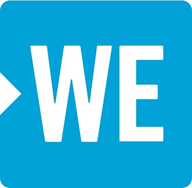

.png)
Rainbow Railroad is a Canadian charitable organization that serves to help members of the LGBTQ+ community escape violence and persecution in their communities or countries. They support, provide information, and help arrange safe transportation for these individuals worldwide to places wehre they can live their lives in freedom. At any given time, the organization works on 30-50 open cases to provide safe escape for affected individuals, from Chechnya to Jamaica. Their work has been covered in news outlets like CBC, CTV, and The Globe and Mail, among others.
 2019
2019
WE is a family of organizations dedicated to empowering youth and making doing good doable. Internationally, WE Villages uses a sustainable, holistic, five-pillar development model to tackle and break the cycle of poverty in communities around the world. Domestically, WE Schools, is a yearlong educational program that nurtures compassion in students and gives them the tools to create transformative social change. Through WE’s various segments, the organization hopes to shift “me thinking” to “WE thinking”, providing adults and youth alike, the platform and resources to make a positive impact on their communities and the world.
 2018ALS Double Play strives to make a difference in the lives of people living with ALS and future generations so that one day there will be a world without ALS. ALS Double Play raises awareness for amyotrophic lateral sclerosis (ALS) through numerous in person and online events. Funds raised are supporting the Christopher Chiu Fellowship for ALS research at the University of Toronto, one of Canada's largest and most internationally published ALS research labs.
 2017
2017
Night It Up! raised $10,000 for Raising the Roof’s newest initiative - The Upstream Project, Canada’s first school-based prevention program aimed at addressing youth homelessness.
Created a roof lifting challenge with the iconic red roof to "Raise the Roof" and help support solutions to youth homelessness.
An average of 235,000 Canadians experience homelessness each year. However, the solution is more than just providing them a place to live. Raising the Roof believes the real solution to end homelessness is preventing it from occurring in the first place.
 2016
2016
Night It Up! raised $10,000 for Yellow Brick House.
Based on their tagline of "rebuilding lives", PUYO created an interactive escape room named "The Yellow Brick House Experience", giving patrons the perspective of an abused woman and her rebuilding process through the help of Yellow Brick House.
Yellow Brick House provides services in York Region to women and children who have experienced violence and abuse by empowering them. Last year alone, 6,500 women and children received shelter, counselling and support through Yellow Brick House. They have made tremendous strides and have stood up to support those who need it most.
 2015
2015
Night It Up! raised $10,000 for UNITY Charity.
UNITY Charity empowers youth through their art leadership and training programs. PUYO created a special art zone, featuring Paint-a-Thon's graffiti painting, breakdancing, busking, beatboxing to promote the various art forms that run in the programs.
 2014
2014
Night It Up! raised $10,000 for Second Harvest through an art mural campaign - Dish a Dollar, Ditch Hunger - and a Truck Pull Race to raise awareness for Second Harvest's food rescue program.
 2013
2013
Night It Up! raised $10,000 for Make-A-Wish Canada.
Make-A-Wish Canada’s sole mission is to grant the wishes of children with serious medical conditions. Night It Up!’s wish child is Justin, a cheerful nine-year-old undergoing brain tumour treatment, whose dream is to go to Disney World.
2012Night It Up! raised $10,000 for Sleeping Children Around The World.
Sleeping Children Around the World is a Toronto-based charity that raises funds to provide bedkits to children globally, typically located in underdeveloped and developing countries.
2011Night It Up! raised $10,000 for Well of Change.
Well of Change was a unique initiative designed to help individuals donate and volunteer the skills they excel in, to “buyers” looking to purchase those skills, services or talents. The funds collected from the exchange of the services was donated to the Canadian charities of the volunteers’ choice.
Rebranded as Night It Up!, raised awareness for OtherHalf Chinese Stem Cell Drive and Asian Community AIDS Services.
To support the Chinese stem cell initiative, swap test stations were set up at Night It Up! for people to register to become a stem cell donor. The initiative has reached thousands of qualified donors within the Chinese community. PUYO volunteers also helped ACAS by hanging out safe sex kits with condoms and lube to educate and raise awareness for AIDS prevention.
2009Toronto Night Market raised $5,000 for Youth Out Loud.
PUYO participated in the 3rd annual Walk to Stop Child Sexual Abuse, organized by Youth Out Loud, at Dundas Square. Youth Out Loud was a grassroots non-profit organization that aims to break the silence surrounding violence by speaking up about physical, emotional, spiritual, and sexual abuse.
2008Toronto Night Markets raised $10,000 for Yee Hong’s Centre for Geriatric Care.
To pay tribute to the seniors at Yee Hong, we set the theme as nostalgia, featuring vendors with nostalgic childhood snacks vendors and music performances of songs between 60's to 80's.
 2007
2007
Renamed to Toronto Night Market, raised $10,000 for Under the Banyan Tree: Centre for the Developmentally Disabled, and PUYO members celebrated with their students at a summer barbecue.
Under the Banyan Tree provides an emotional shelter for the developmentally disabled in the Asian community, who suffer from cultural acceptance and language barrier. Students of the Under the Banyan Tree centre have demonstrated their status as contributing members with hand-made crafts sold at their small gift shop. At their Night Market booth, student work will be featured to the public.
 2006
2006
Asian Night Market raised $10,000 for Harmony Place.
Harmony Place supports young adults with developmental and/or physical challenges. A growing number of challenged individuals are placed on a waiting list for financial support, day programming or residential placements; while the government has only been able to support approximately 200 individuals per year.
2005Asian Night Market raised $5,000 for Child Find in memory of Cecilia Zhang.
Cecilia Zhang went missing, and the Chinese community came together to help find her. Driven by these unfortunate incidents involving young children, PUYO helped raise awareness on the issue and educate parents on how to prevent their children from going missing.
2004Asian Night Market’s “Bring Toronto Back to Life,” took place in an effort to rejuvenate Toronto after SARS, raising $10,000 for the Scarborough Hospital, Grace Division. With many people’s trips to Asia cancelled, PUYO focused on bringing a piece of Asia to Toronto with the Night Market and chose to support the healthcare system to commemorate the front line personnel who battled directly with SARS.
2003Asian Night Market launched in July at Metro Square, supporting a youth cause to emphasize a youth-helping-youth culture for the organization. That year, $3,000 was raised for Covenant House, the largest youth shelter in Canada.
2002